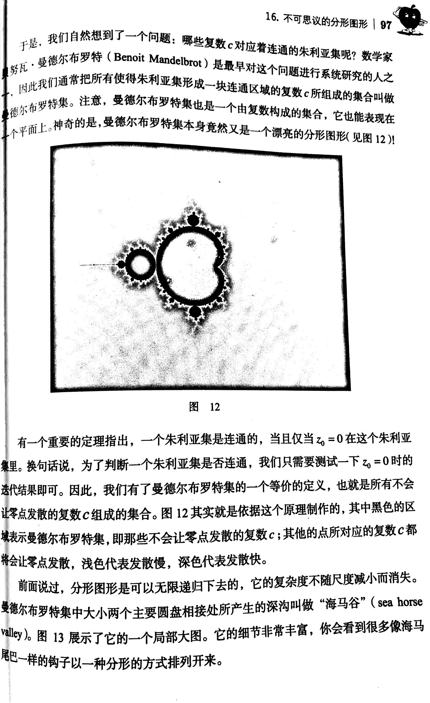
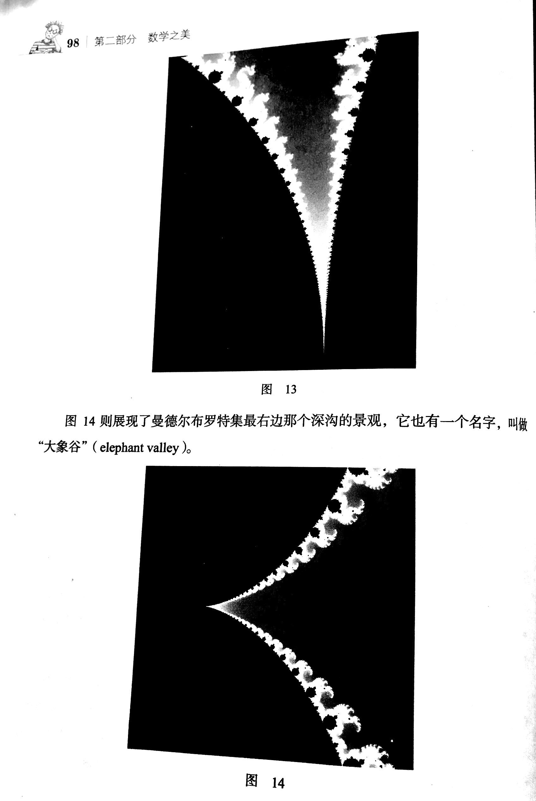
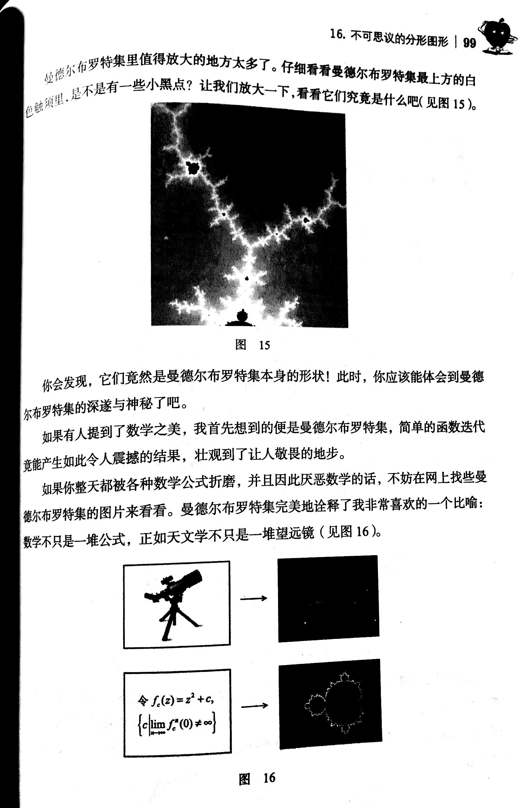
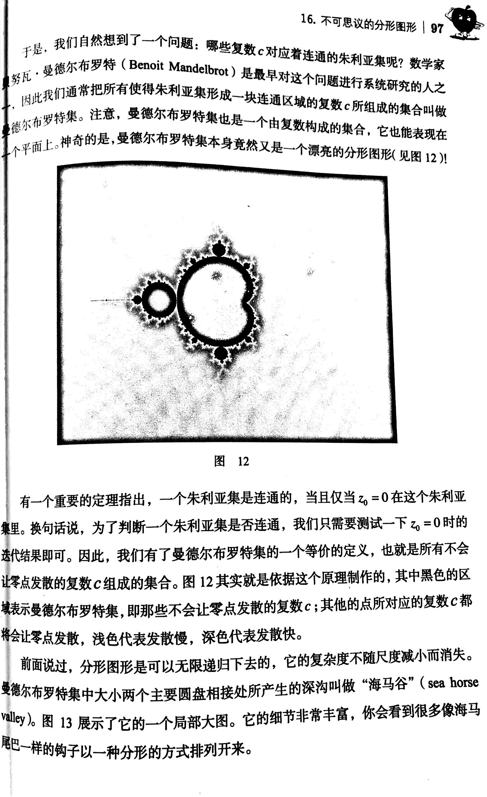
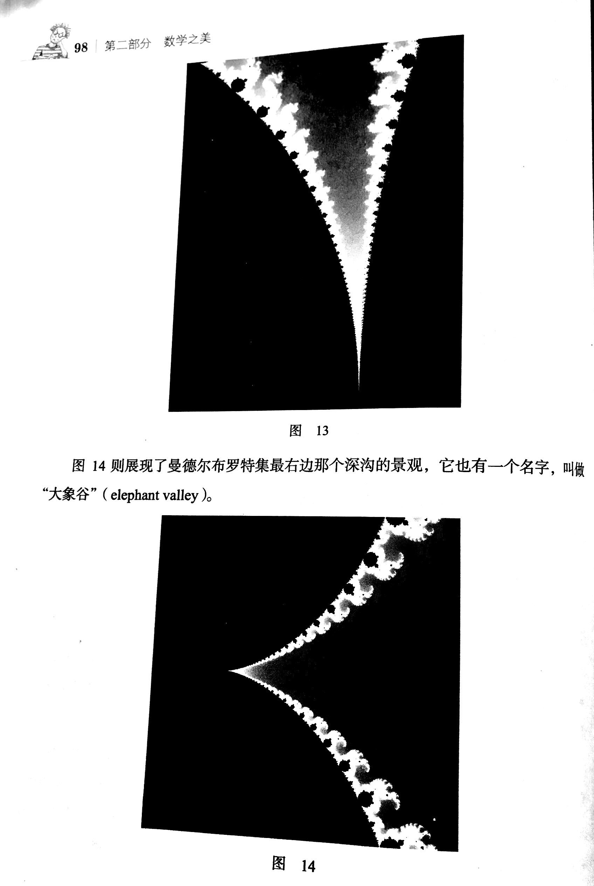
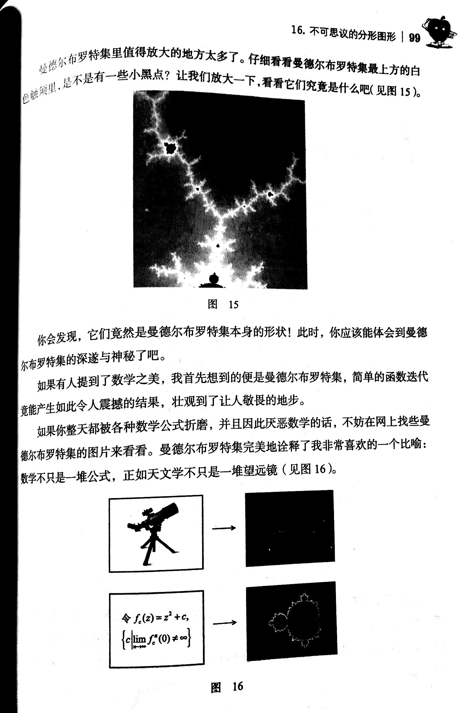

本篇为《思考的乐趣》复现系列の第四弹
原博客：
代码实现并不复杂，这里我参照了此处的教程。另外，由于每个像素的计算互相独立，非常适合采用shader并行化加速，因此我实际上用的是WebGL下的3D绘图。
虽然分形在数学上是无限的，但计算机是有限的，受到浮点数精度限制，图案并不能无限放大。尽管可以利用某些数值优化方法解决这一问题，不过目前的精度已经足以复现书上的现象了。
最后想再吐槽一下，这真的"漂亮"吗？我调试的时候直起鸡皮疙瘩...
Mandelbrot集
本篇为《思考的乐趣》复现系列の第四弹
原博客：
代码实现并不复杂，这里我参照了此处的教程。另外，由于每个像素的计算互相独立，非常适合采用shader并行化加速，因此我实际上用的是WebGL下的3D绘图。
虽然分形在数学上是无限的，但计算机是有限的，受到浮点数精度限制，图案并不能无限放大。尽管可以利用某些数值优化方法解决这一问题，不过目前的精度已经足以复现书上的现象了。
最后想再吐槽一下，这真的"漂亮"吗？我调试的时候直起鸡皮疙瘩...

All the demos have been tested on Microsoft Edge/macOS.
This site is powered by Gitee Pages.